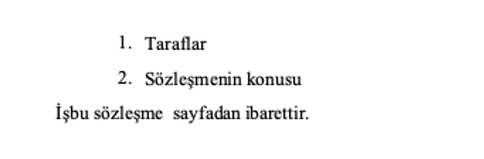

Word’den UDF’ye çevirirken bazı belgelerde sayfa sayısı, madde numarası, tablo satırı ya da metin kutusu düşüyordu. Bu kayıpları giderdim, Windows ve Mac’te denedim.
1.2.3 ile çevrilmiş

1.2.4 ile çevrilmiş
Aynı Word belgesi, UYAP Doküman Editörü’nde açılmış hâliyle.
Web’den “Word’e aktar” ile indirilen belgeler artık boş çıkmıyor.
Aynı adda bir UDF varsa program sormadan üzerine yazmıyor.
Form alanlı tablo satırları ile gruplanmış metin kutuları eksiksiz çevriliyor.
Windows’ta .doc dosyalarındaki makrolar çeviri sırasında çalıştırılmıyor.
İndirmek için: github.com/miasimbilir/udf-ceviriciAv. Mevlana İbrahim Asım Bilir